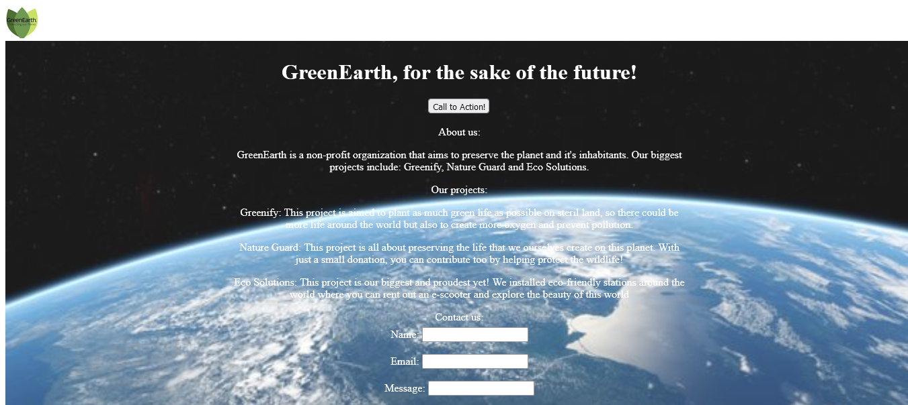
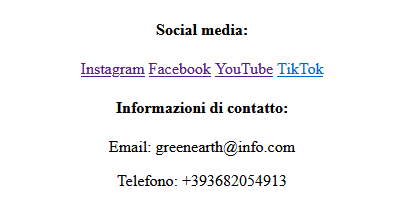

This project focuses on creating a website for a startup that deals with projects with an environmental impact such as reforestation and ocean cleaning. In the screenshot you can see the main page, composed of a hero section with an image of your choice, all the active projects of the startup and a short description of them
Integrated into the project, and at the bottom of the page, there are links to the startup's social networks
